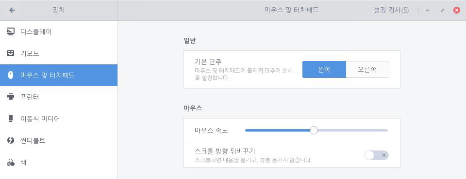

별도의 하드웨어 버튼 없이 터치패드에서 탭 또는 제스쳐를 통해 클릭, 두 번 클릭, 드래그, 스크롤과 같은 동작을 수행할 수 있습니다. 터치패드가 지원되는 경우에만 마우스 및 터치패드 설정 옵션을 확인할 수 있습니다.
탭으로 클릭
별도의 버튼을 사용하지 않고 터치패드를 탭하여 클릭 동작을 수행할 수 있습니다. 다음 단계를 수행하여 탭으로 클릭하기를 설정합니다.1. 좌측 하단의 [시작]아이콘을 클릭하고 검색 창에 "설정"을 입력한 후 [설정] 애플리케이션을 실행합니다.
 2. [설정] 애플리케이션 사이드 바에서 [장치]를 클릭하고 [마우스 및 터치패드]를 클릭합니다.
2. [설정] 애플리케이션 사이드 바에서 [장치]를 클릭하고 [마우스 및 터치패드]를 클릭합니다.
3. 터치패드 설정을 켜고 [탭으로 클릭]을 설정합니다.한 번 클릭하려면 터치패드를 한 번 탭하고 두 번 클릭하려면 터치패드를 두 번 탭합니다. 드래그하려면 터치패드를 두 번 탭한 다음 손가락을 떼지 않고 원하는 방향으로 끕니다. 원하는 위치에서 손가락을 떼면 드래그 동작이 멈춥니다. 사용 중인 터치패드에서 여러 개의 손가락을 사용한 탭을 지원하는 경우 두 개의 손가락으로 동시에 터치패드를 탭하여 두 번 클릭 동작을 수행할 수 있습니다. 지원되지 않는 경우 별도의 하드웨어 단추가 필요할 수도 있습니다. 그럴 경우 마우스 오른쪽 단추 누르기 대체 페이지를 참고하세요. 여러 개의 손가락을 사용한 탭을 지원하는 경우 세 손가락을 한 번에 탭히여 마우스 중간 클릭을 수행할 수도 있습니다.


두 손가락을 사용한 스크롤
두 손가락을 사용하여 마우스를 스크롤할 수 있습니다. 다음 단계를 수행하여 두 손가락으로 마우스를 스크롤합니다.1. 좌측 하단의 [시작]
2. [설정] 애플리케이션 사이드 바에서 [장치]를 클릭하고 [마우스 및 터치패드]를 클릭합니다.
3. 터치패드 설정을 켜고 [두 손가락을 사용한 스크롤]을 설정합니다.두 손가락을 사용한 스크롤 옵션을 설정하더라도 한 손가락으로 탭하거나 드래그하는 동작은 문제 없이 인식되며 두 손가락으로 드래그할 때만 스크롤로 인식합니다. 이 때 두 손가락 사이가 충분히 떨어져 있지 않으면 터치패드가 한 손가락으로 인식할 수 있으므로 두 손가락을 충분히 떨어뜨려야 합니다.
자연스러운 스크롤
마치 종이 위에서 자유롭게 손가락을 움직이듯이 터치패드를 사용하여 콘텐츠를 드래그할 수 있습니다. 다음 단계를 수행하여 자연스러운 스크롤을 설정합니다.1. 좌측 하단의 [시작]
2. [설정] 애플리케이션 사이드 바에서 [장치]를 클릭하고 [마우스 및 터치패드]를 클릭합니다.
3. 터치패드 설정을 켜고 [자연스러운 스크롤]을 설정합니다.